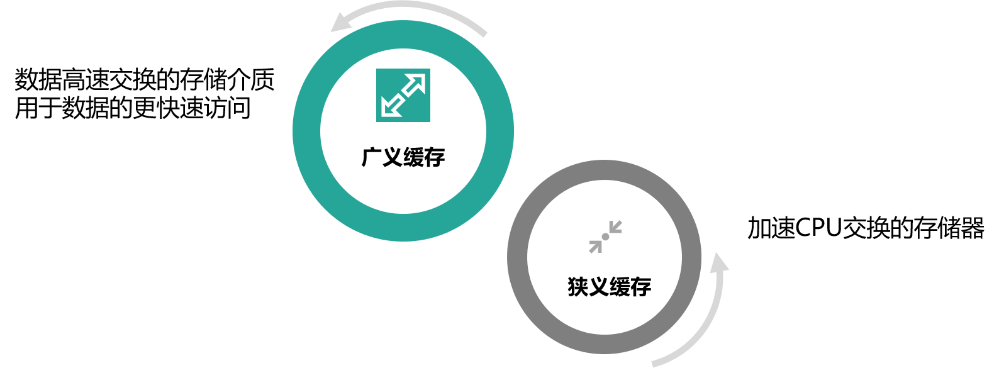
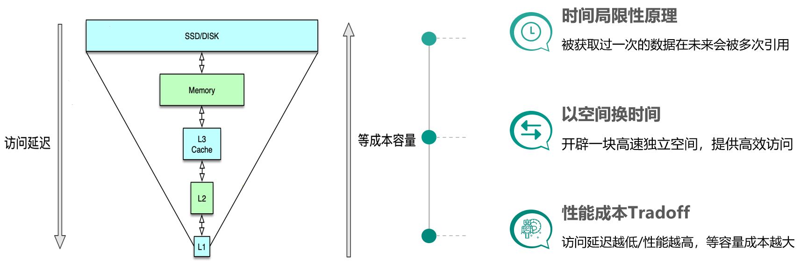

- 00 开篇寄语：缓存，你真的用对了吗？.md.html
- 01 业务数据访问性能太低怎么办？.md.html
- 02 如何根据业务来选择缓存模式和组件？.md.html
- 03 设计缓存架构时需要考量哪些因素？.md.html
- 04 缓存失效、穿透和雪崩问题怎么处理？.md.html
- 05 缓存数据不一致和并发竞争怎么处理？.md.html
- 06 Hot Key和Big Key引发的问题怎么应对？.md.html
- 07 MC为何是应用最广泛的缓存组件？.md.html
- 08 MC系统架构是如何布局的？.md.html
- 09 MC是如何使用多线程和状态机来处理请求命令的？.md.html
- 10 MC是怎么定位key的.md.html
- 11 MC如何淘汰冷key和失效key.md.html
- 12 为何MC能长期维持高性能读写？.md.html
- 13 如何完整学习MC协议及优化client访问？.md.html
- 14 大数据时代，MC如何应对新的常见问题？.md.html
- 15 如何深入理解、应用及扩展 Twemproxy？.md.html
- 16 常用的缓存组件Redis是如何运行的？.md.html
- 17 如何理解、选择并使用Redis的核心数据类型？.md.html
- 18 Redis协议的请求和响应有哪些“套路”可循？.md.html
- 19 Redis系统架构中各个处理模块是干什么的？.md.html
- 20 Redis如何处理文件事件和时间事件？.md.html
- 21 Redis读取请求数据后，如何进行协议解析和处理.md.html
- 22 怎么认识和应用Redis内部数据结构？.md.html
- 23 Redis是如何淘汰key的？.md.html
- 24 Redis崩溃后，如何进行数据恢复的？.md.html
- 25 Redis是如何处理容易超时的系统调用的？.md.html
- 26 如何大幅成倍提升Redis处理性能？.md.html
- 27 Redis是如何进行主从复制的？.md.html
- 28 如何构建一个高性能、易扩展的Redis集群？.md.html
- 29 从容应对亿级QPS访问，Redis还缺少什么？.md.html
- 30 面对海量数据，为什么无法设计出完美的分布式缓存体系？.md.html
- 31 如何设计足够可靠的分布式缓存体系，以满足大中型移动互联网系统的需要？.md.html
- 32 一个典型的分布式缓存系统是什么样的？.md.html
- 33 如何为秒杀系统设计缓存体系？.md.html
- 34 如何为海量计数场景设计缓存体系？.md.html
- 35 如何为社交feed场景设计缓存体系？.md.html
01 业务数据访问性能太低怎么办？
你好，我是你的缓存老师陈波，欢迎进入第1课时“缓存的原理”。这节课主要讲缓存的基本思想、缓存的优点、缓存的代价三个部分。
缓存的定义
先来看下缓存的定义。
- 缓存最初的含义，是指用于加速 CPU 数据交换的 RAM，即随机存取存储器，通常这种存储器使用更昂贵但快速的静态 RAM（SRAM）技术，用以对 DRAM进 行加速。这是一个狭义缓存的定义。
- 而广义缓存的定义则更宽泛，任何可以用于数据高速交换的存储介质都是缓存，可以是硬件也可以是软件。
 缓存存在的意义就是通过开辟一个新的数据交换缓冲区，来解决原始数据获取代价太大的问题，让数据得到更快的访问。本课主要聚焦于广义缓存，特别是互联网产品大量使用的各种缓存组件和技术。
缓存原理
缓存的基本思想

缓存构建的基本思想是利用时间局限性原理，通过空间换时间来达到加速数据获取的目的，同时由于缓存空间的成本较高，在实际设计架构中还要考虑访问延迟和成本的权衡问题。这里面有 3 个关键点。
- 一是时间局限性原理，即被获取过一次的数据在未来会被多次引用，比如一条微博被一个人感兴趣并阅读后，它大概率还会被更多人阅读，当然如果变成热门微博后，会被数以百万/千万计算的更多用户查看。
- 二是以空间换时间，因为原始数据获取太慢，所以我们开辟一块高速独立空间，提供高效访问，来达到数据获取加速的目的。
- 三是性能成本 Tradeoff，构建系统时希望系统的访问性能越高越好，访问延迟越低小越好。但维持相同数据规模的存储及访问，性能越高延迟越小，成本也会越高，所以在系统架构设计时，你需要在系统性能和开发运行成本之间做取舍。比如左边这张图，相同成本的容量，SSD 硬盘容量会比内存大 10～30 倍以上，但读写延迟却高 50～100 倍。
缓存的优势
缓存的优势主要有以下几点：
- 提升访问性能
- 降低网络拥堵
- 减轻服务负载
- 增强可扩展性
通过前面的介绍，我们已经知道缓存存储原始数据，可以大幅提升访问性能。不过在实际业务场景中，缓存中存储的往往是需要频繁访问的中间数据甚至最终结果，这些数据相比 DB 中的原始数据小很多，这样就可以减少网络流量，降低网络拥堵，同时由于减少了解析和计算，调用方和存储服务的负载也可以大幅降低。缓存的读写性能很高，预热快，在数据访问存在性能瓶颈或遇到突发流量，系统读写压力大增时，可以快速部署上线，同时在流量稳定后，也可以随时下线，从而使系统的可扩展性大大增强。
缓存的代价
然而不幸的是，任何事情都有两面性，缓存也不例外，我们在享受缓存带来一系列好处的同时，也注定需要付出一定的代价。
- 首先，服务系统中引入缓存，会增加系统的复杂度。
- 其次，由于缓存相比原始 DB 存储的成本更高，所以系统部署及运行的费用也会更高。
- 最后，由于一份数据同时存在缓存和 DB 中，甚至缓存内部也会有多个数据副本，多份数据就会存在一致性问题，同时缓存体系本身也会存在可用性问题和分区的问题。这就需要我们加强对缓存原理、缓存组件以及优秀缓存体系实践的理解，从系统架构之初就对缓存进行良好设计，降低缓存引入的副作用，让缓存体系成为服务系统高效稳定运行的强力基石。
一般来讲，服务系统的全量原始数据存储在 DB 中（如 MySQL、HBase 等），所有数据的读写都可以通过 DB 操作来获取。但 DB 读写性能低、延迟高，如 MySQL 单实例的读写 QPS 通常只有千级别（3000～6000），读写平均耗时 10～100ms 级别，如果一个用户请求需要查 20 个不同的数据来聚合，仅仅 DB 请求就需要数百毫秒甚至数秒。而 cache 的读写性能正好可以弥补 DB 的不足，比如 Memcached 的读写 QPS 可以达到 10～100万 级别，读写平均耗时在 1ms 以下，结合并发访问技术，单个请求即便查上百条数据，也可以轻松应对。
但 cache 容量小，只能存储部分访问频繁的热数据，同时，同一份数据可能同时存在 cache 和 DB，如果处理不当，就会出现数据不一致的问题。所以服务系统在处理业务请求时，需要对 cache 的读写方式进行适当设计，既要保证数据高效返回，又要尽量避免数据不一致等各种问题。
好了，第 1 课时的内容到这里就全部结束了，我们一起来做一个简单的回顾。首先，这一课时，你先了解了缓存的定义以及基本思想。然后，又学习了缓存的优点和代价。